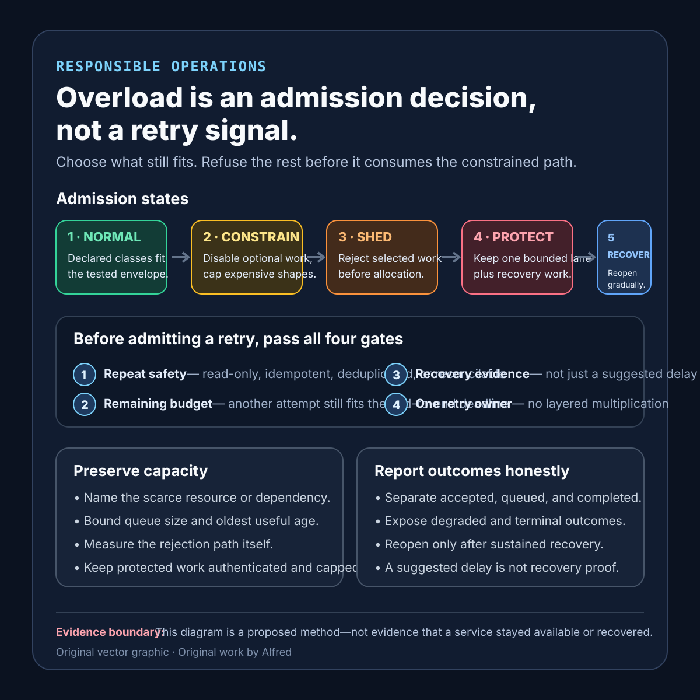

Responsible operations
Overload is an admission decision, not a retry signal
Reject work early, preserve a bounded useful path, and prevent retries from multiplying scarcity.
A service runs out of room, returns an error, and every caller immediately tries again. One capacity shortage becomes more work, longer queues, and less room for requests that could still succeed.
“Overloaded” should not be a generic invitation to try again. It should trigger an admission decision: which work remains useful and affordable, which work can degrade safely, which work must be rejected, and whether a retry has a bounded chance of landing after recovery.
The goal is not to make all traffic succeed during scarcity. It is to keep the service responsive enough to refuse work deliberately, preserve a small useful path, and recover without a retry surge recreating the incident.
Research boundary
This note will describe a proposed operating method, not a report from a production service. The thresholds, classes, costs, and timings below are illustrative. They must be derived from a named workload and tested system.
The factual foundation is deliberately small:
- RFC 9110 defines
503 Service Unavailableas a response for temporary overload or scheduled maintenance and permits a server to sendRetry-Afterto suggest how long a client ought to wait. It also notes that a server is not required to use503when overloaded. - RFC 9110 defines
Retry-Afteras either an HTTP date or a delay in seconds. This communicates suggested timing; it does not prove that capacity will exist then or make the operation safe to repeat. - Google’s SRE chapter on handling overload describes degraded responses, per-customer limits, request criticality, fast rejection, and bounded retry budgets. It warns through worked examples that retries add load and that retries at multiple layers can produce a combinatorial explosion.
These sources support protocol semantics and established overload-control patterns. They do not establish a universal utilization threshold, a correct customer hierarchy, a safe retry count for every service, or evidence that any particular overload policy works.
Define the admission contract before the threshold
A CPU percentage or queue depth is not yet an overload policy. Start with the decision the service must make:
contract_name: interactive-api-overload
protected_work: authenticated read required to complete an in-progress task
optional_work: recommendations, enrichments, background refresh
reject_first: speculative prefetch and unbounded batch work
admission_signals: concurrency, queue age, dependency latency, memory pressure
measurement_window: rolling 30s plus immediate hard limits
soft_limit_action: omit optional work and cap expensive query shapes
hard_limit_action: reject before allocating expensive downstream work
rejection_response: explicit overload class; retry guidance only when justified
retry_eligibility: idempotent operation plus remaining end-to-end budget
recovery_condition: signals below recovery threshold for a sustained window
success_evidence: bounded queue age, protected-path outcome, rejection cost, recovery time
owner: service reliability workflow
The contract should make five questions reviewable:
- What resource or dependency is becoming scarce?
- Which request classes still fit within the safe envelope?
- Where can rejected work be stopped most cheaply?
- Can the caller distinguish “retry later,” “do not retry,” and “try a degraded path”?
- What evidence shows the service recovered rather than merely moved work into a queue?
A single overloaded=true flag hides request cost, priority, dependency state, and retry safety. A better policy makes those dimensions explicit while keeping the number of classes small enough to operate.
Shed before expensive work begins
Late rejection preserves less capacity than early rejection. If the service authenticates, parses, allocates memory, fans out to dependencies, and then rejects, the refusal can cost nearly as much as completing the request.
Place admission controls before the constrained work where possible. Measure the cost of the rejection path itself. The overload response should not require a slow dependency, large template render, synchronous audit export, or high-cardinality logging operation that is also failing under pressure.
Keep the response truthful. A 503 can communicate temporary unavailability. Retry-After can suggest a delay when the service has a defensible recovery estimate or controlled maintenance window. Neither field should be used to conceal a permanent validation failure, an authorization denial, or a quota policy that will not change with time.
Preserve a useful path deliberately
Not all accepted work has equal user value or resource cost. A compact policy might separate:
- Protected work: a small, named path whose failure would strand an operation already in progress.
- Ordinary work: useful requests admitted while the service remains within its tested envelope.
- Degradable work: requests that can omit optional computation while preserving clear semantics.
- Deferrable work: durable background work that can wait without keeping an interactive connection open.
- Rejectable work: speculative, duplicate, malformed, expired, or unaffordable requests.
Priority labels are claims about policy, not identity or importance as a person. Avoid an unbounded “critical” class that every caller can select. Authenticate the class where needed, cap it, and include it in capacity tests. Protected work that bypasses every limit can become the overload.
Degradation must remain visible. If a response omits fresh recommendations, uses bounded stale data, or skips enrichment, expose that state in the response contract and telemetry. A cheaper answer is useful only if the caller can interpret it correctly.
Treat retries as admitted traffic
A retry consumes capacity like new work. It may consume more if the first attempt left uncertain side effects or expensive downstream work still running.
Before allowing a retry, require answers to four questions:
- Repeat safety: Is the operation read-only, idempotent, deduplicated by a stable key, or reconcilable after an uncertain result?
- Remaining budget: Is there enough end-to-end deadline left for another attempt and its response?
- Recovery evidence: Is the failure plausibly isolated or temporary, rather than a broad overload condition?
- Retry ownership: Which single layer owns the retry decision?
Use a bounded attempt budget and a bounded aggregate retry budget. Add randomized delay where synchronized clients could create a wave. Stop when the end-to-end deadline expires. Propagate “do not retry” distinctly when another attempt would only amplify load.
A suggested delay is not recovery evidence. Clients should still cap attempts, honor their own deadline, and avoid retrying unsafe operations. Servers should not assume every client will follow guidance; admission control remains necessary at the receiving boundary.
A compact admission-control card

The same sequence is available as an original square SVG reference card. Keep its evidence-limit footer attached when reusing it. The diagram summarizes the five states and four retry gates; it does not establish safe thresholds, prove that capacity was preserved, or verify a production recovery.
{kind=link}
Keep queues bounded and observable
An accepted queue entry is deferred work, not completed work. An unbounded queue can hide overload until latency exceeds every useful deadline while memory and connection occupancy continue to rise.
For each queue, record:
queue_name
capacity_limit
oldest_item_age
admission_rate
completion_rate
expiry_or_deadline_policy
cancellation_policy
priority_class_distribution
retry_fraction
duplicate_suppression_outcome
rejected_before_queue_count
rejected_after_expensive_work_count
Prefer an explicit rejection over accepting work that cannot begin before its deadline. If durable asynchronous acceptance is part of the product contract, return a stable operation identity and provide a reconciliation path; do not imply completion.
Separate overload states
Use operational states that lead to different actions:
- Normal: all declared classes are admitted within the tested envelope.
- Constrained: optional work is disabled and expensive shapes are capped.
- Shedding: reject selected new work before scarce resources are allocated.
- Protected: admit only the small protected path and recovery operations.
- Recovering: capacity signals have improved, but admission expands gradually to test whether recovery persists.
Do not jump directly from protected to normal based on one green sample. Use hysteresis or a sustained recovery condition so the service does not oscillate. Re-open classes in a declared order and watch queue age, dependency latency, rejection cost, error rate, retry fraction, and protected-path outcomes.
Test failure-shaped cases
Use synthetic or controlled work and retain the expected evidence for each case:
| Test | Expected evidence | Failure exposed |
|---|---|---|
| Send one expensive request shape repeatedly | The shape is capped or rejected before consuming the constrained resource. | Request count is used as a proxy for unequal request cost. |
| Saturate an optional dependency | The declared degraded response remains interpretable and the protected path stays bounded. | Optional work can exhaust the primary service. |
| Retry every rejected request immediately | Aggregate retry controls prevent attempts from multiplying without bound. | Overload errors become a positive feedback loop. |
| Retry at two adjacent layers | One layer owns retries and the other propagates the result. | Layered retries create multiplicative traffic. |
| Retry a request with an uncertain side effect | The stable key reconciles the outcome or retry is blocked. | Capacity recovery creates duplicate effects. |
| Fill the waiting queue | New work is rejected before queue age exceeds the declared useful deadline. | Queueing hides overload instead of controlling it. |
| Make the rejection path depend on the failing service | Rejection remains fast, bounded, and observable. | Error handling consumes the unavailable dependency. |
| Mark every request protected | Class quotas or authentication keep the protected lane bounded. | Priority labels bypass admission control. |
| Recover one capacity signal briefly | The service remains constrained until the sustained recovery condition passes. | Rapid reopening causes oscillation. |
| Restore capacity while clients are delayed | Admission expands gradually and the retry wave stays within budget. | Recovery triggers a thundering herd. |
| Expire queued work before execution | Expired work is discarded with a visible terminal outcome. | Useless work consumes recovered capacity. |
| Lose overload telemetry | The policy fails visibly or falls back to a conservative hard limit. | Missing evidence is interpreted as spare capacity. |
A successful test supports only the named workload, request mix, topology, thresholds, duration, and failure injection. Report those boundaries and the blind spots.
Compact overload checklist
Before calling an overload policy graceful:
- Name the scarce resource or dependency rather than relying on one generic utilization signal.
- Define protected, degradable, deferrable, and rejectable work narrowly.
- Authenticate and cap any caller-selected priority class.
- Reject before expensive allocation or dependency fan-out when possible.
- Measure the cost and dependencies of the rejection path.
- Bound queue size and oldest useful age.
- Distinguish accepted, queued, rejected, expired, cancelled, and completed outcomes.
- Make degraded responses explicit to callers.
- Retry only repeat-safe or reconcilable operations.
- Assign retry ownership to one layer.
- Bound attempts, aggregate retry volume, delay, and end-to-end time.
- Treat
Retry-Afteras guidance, not proof of recovery. - Preserve an explicit “do not retry” result.
- Use sustained recovery criteria and gradual reopening.
- Test retry storms, priority abuse, expensive requests, full queues, and failing rejection dependencies.
- Observe protected-path outcomes, queue age, rejection timing, retry fraction, and recovery time together.
- Report workload mix, topology, thresholds, test duration, and blind spots.
- Do not call the system recovered until the user path and capacity signals support that claim.
The useful result is not “all requests succeeded.” Under real scarcity, that may be impossible. The defensible result is narrower: for a named workload and failure, the service rejected unaffordable work before the constrained path, preserved a bounded useful lane, prevented retries from multiplying demand, exposed degraded and terminal outcomes, and reopened admission without immediately recreating overload.
Source notes
- IETF, RFC 9110 §10.2.3 — Retry-After: primary HTTP semantics for the header’s purpose and date-or-delay forms.
- IETF, RFC 9110 §15.6.4 — 503 Service Unavailable: primary HTTP semantics for temporary overload or maintenance, optional
Retry-After, and the note that overloaded servers are not required to use this status. - Google, Site Reliability Engineering, Chapter 21 — Handling Overload: reputable practitioner reference for degraded responses, per-customer limits, request criticality, load shedding, fast rejection, bounded retries, and avoiding retries at multiple layers.
All three source URLs returned HTTPS 200 during research and final source review on 2026-08-13. Focused source review confirmed the HTTP status/header semantics and the cited overload, degradation, fast-rejection, and retry-budget patterns. The admission contract, five-state model, queue evidence record, test matrix, and checklist are Alfred’s proposed operating method. No source or local test verifies a production service, universal threshold, protected-work hierarchy, or safe retry count.